Read the text.
Recipe cards, slides, receipts, screenshots. Turn the words in a photo into text you can edit and search.
Extract text
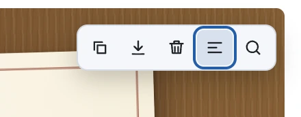
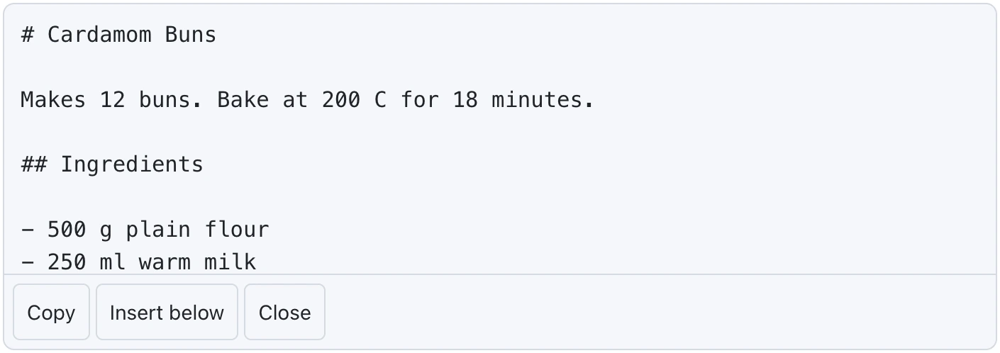
Type it once. Your Mac decides where it goes. Everything stays as plain files in a folder you own.
Apple Silicon · macOS 14 or later
FolioNotes is a Mac app for Apple Silicon. Open this page on your Mac to download.
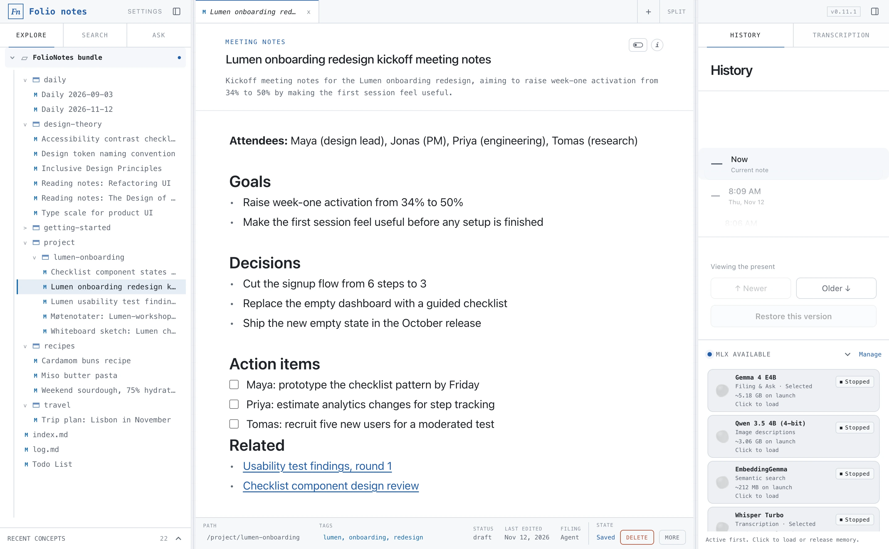
Filing, search, answers, meetings, images and translation all run on your Mac. No account. No cloud. No analytics.
The network is used only for model downloads you request (from Hugging Face) and update checks against GitHub Releases.
Local LLM filing
Write or paste, then press Cmd Enter. FolioNotes proposes a folder, title and tags. You say yes.
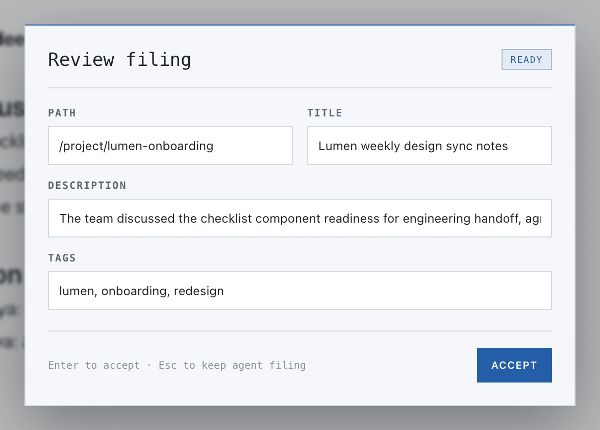
On-device AI
Hit record on a call or drop in a file. Your Mac turns it into a transcript and labels every speaker. The audio never leaves your Mac.
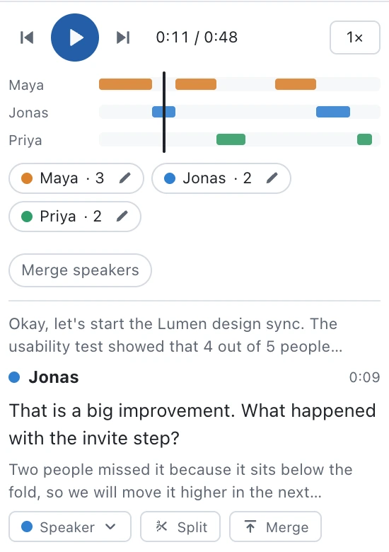
On-device AI
Hover any image in a note. Two buttons do the rest.
Recipe cards, slides, receipts, screenshots. Turn the words in a photo into text you can edit and search.


Whiteboards, sketches, photos. Get a short description for alt text, or so you can find the image later.
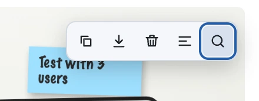
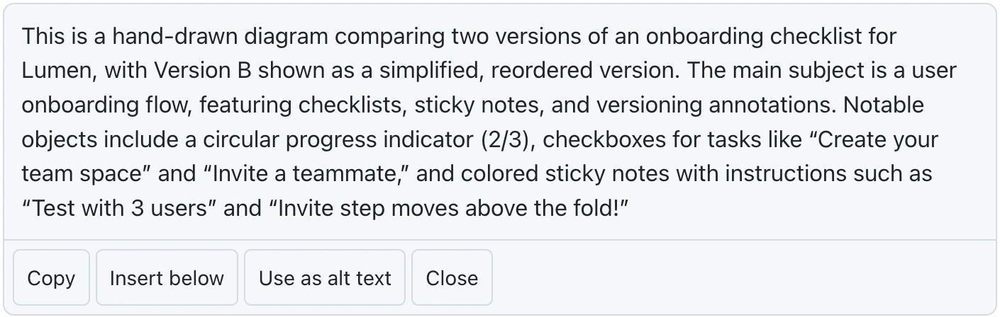
Extracted text and descriptions are searchable. The image never leaves your Mac.
Translation
Flip a switch and any note reads in Norwegian or English. Your original stays untouched.
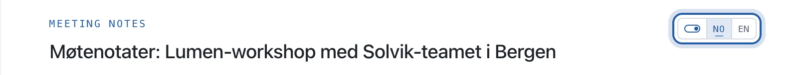
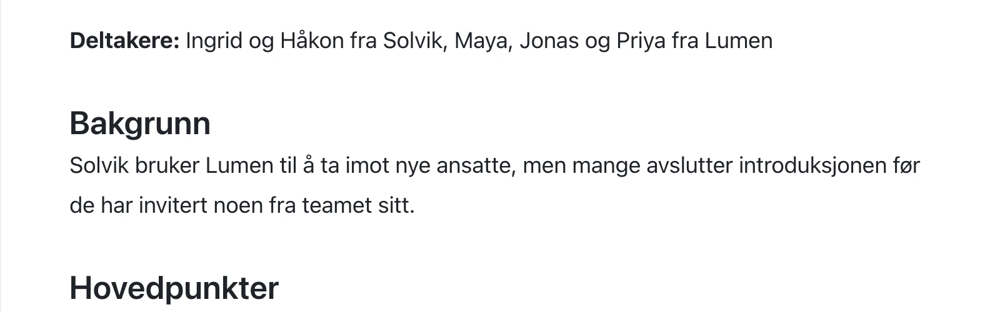
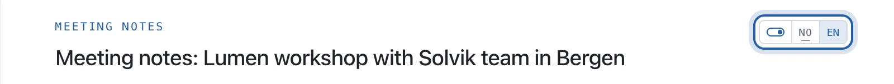
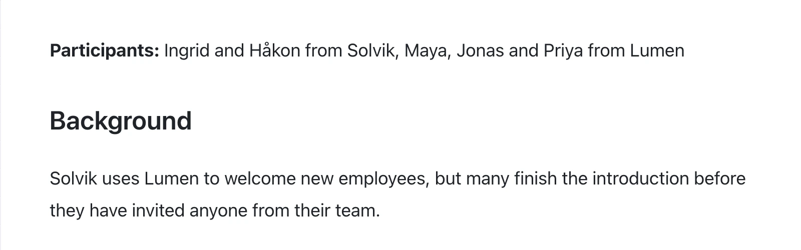
Search and Ask
Search by meaning or by keyword, images included. Ask for a written answer with links to the notes behind it.
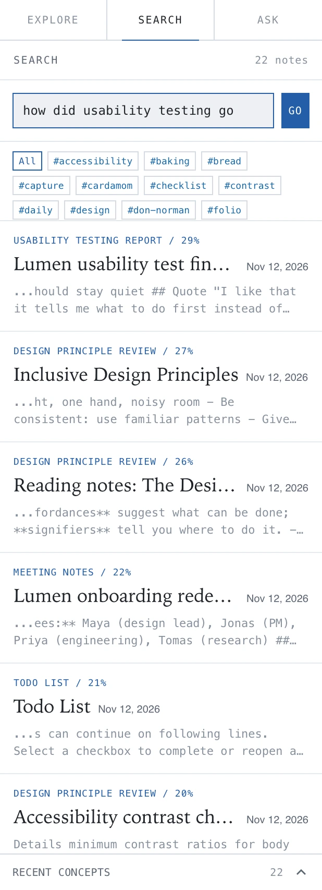
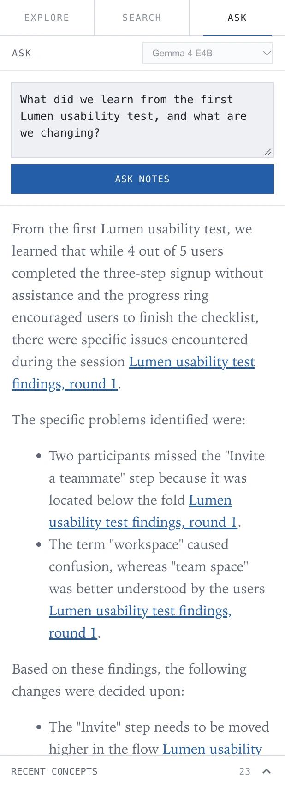
Capture the mic or an online call, or import an audio file.
An editable note that plays back in sync.
Define a value once, reuse it everywhere. Speaker names too.
Extract text, describe, copy and download, right from the image.
Every note keeps earlier versions you can restore. Refiling keeps the history.
Indexed from Markdown links and sources. Related notes become links only when you confirm.
Pick the model that fits your Mac. Swap any time.
Export filed notes and local drafts, optionally translated.
Draft, stable or deprecated, with a stale-after date.
Keep work and personal apart. Back up from Settings.
Cmd+B, Cmd+I, Cmd+K, Cmd+Shift+F and more. Click a tag to filter exactly.
Plain Markdown with frontmatter in a folder you own. Any editor or agent can read it.
Agent-first storage
FolioNotes writes Open Knowledge Format v0.2: Markdown with frontmatter for provenance, lifecycle state and generation metadata. Every capture is also kept as an immutable raw note.
It is just a folder of files, so any AI agent, script or editor can read it without an API.
---
type: Usability Testing Report
title: Lumen usability test findings, round 1
description: Findings from five moderated sessions with first-time users on the checklist prototype, including feedback on the signup flow and terminology.
language: en
tags:
- lumen
- onboarding
- usability
status: draft
filing:
by: okf-notetaker/mlx-community/gemma-4-e4b-it-4bit
at: 2026-11-12T07:02:07.917Z
sources:
- id: raw-capture
resource: /references/inbox/20261112T070207Z-lumen-usability-test-findings-round-1-f6cb.md
title: Raw inbox capture
---
# Captured note
## What worked
- 4 of 5 completed the three-step signup without help
## Related
- [Lumen onboarding redesign kickoff](/project/lumen-onboarding/lumen-onboarding-redesign-kickoff-meeting-notes-2026-11-12.md)~/Documents/FolioThe live translated view works between Norwegian and English. Translate and export, for filed notes and local drafts, supports English, Norwegian Bokmål, German, Spanish, French, Italian, Swedish and Danish.
Yes. The desktop app records the microphone, and on macOS 14.2 or later also system audio, so a call on headphones is captured on both sides. Whisper transcribes it on your Mac. With the optional Sortformer model installed, up to four speakers are labeled; you can rename or merge them and play the recording back in sync with the transcript. Audio stays on your Mac.
No. FolioNotes runs its models with MLX, which requires a Mac with Apple Silicon (M1 or later).
In ~/Documents/Folio, as Markdown files with OKF frontmatter, along with the search index. Open the folder in Finder or any editor.
Yes. Your notes are plain Markdown in an open format, so you can copy the folder, open it in another tool, or point an AI agent at it.
It is free and open source under the MIT License. The app checks GitHub Releases and installs signed updates, or you can download the latest version from the Releases page.
Free and open source. Download, open the DMG and drag it to Applications.
Apple Silicon · macOS 14 or later